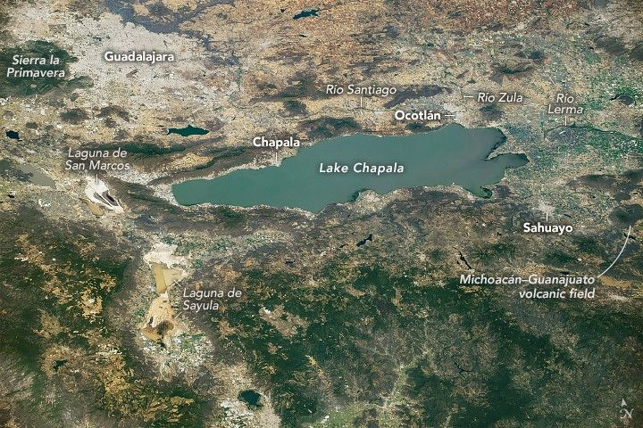

Lake Chapala
While orbiting over the Pacific Ocean, an astronaut aboard the International Space Station captured this oblique photo of Lake Chapala in Mexico’s Jalisco and Michoacán states. The city of Guadalajara is nestled between the Sierra la Primavera volcanic complex and Río Santiago, just north of the lake. Smaller cities, including Chapala, Sahuayo, and Ocotlán, appear light gray and tan and are spread throughout the image.
Lake Chapala is one of the largest freshwater lakes in Mexico. The lake lies in the middle of the Trans-Mexican Volcanic Belt (TMVB), a volcanic arc spanning Mexico, from the Pacific Ocean to the Gulf of America (Gulf of Mexico). The lake is located east of Sierra la Primavera and the Acatlán Volcanic Field and west of the Michoacán-Guanajuato volcanic field. While the volcanic cones in this view are mostly extinct or inactive, the TMVB includes several active volcanoes, such as Colima (just out of frame to the southwest).
Lake Chapala lies at the intersection of three grabens, areas of the Earth’s crust lowered by the movement along faults. Lake Chapala is a basin formed by these grabens and collects water from the Río Lerma and Río Zula. The Río Santiago transports water over 430 kilometers (270 miles) from Lake Chapala to Guadalajara and empties into the Pacific Ocean.
Directly west of the lake, the light tan Laguna de San Marcos is split in half by a highway. An orange-hued, hourglass-shaped area just southeast of San Marcos is Laguna de Sayula. This Ramsar site provides habitat for migratory birds, mammals, and other animals and plants. In this image, both lagoons contain water, indicated by the gray patch in Laguna de San Marcos and the tan colors in Laguna de Sayula. Both lagoons are closed basins without an outflow, and as a result, salt and sediment are deposited in the basins via evaporation.
As of 2023, Guadalajara was home to over 5.4 million people. A previous article featuring images of the Lake Chapala-Guadalajara area acquired in 1982 and 2004 discusses the growth of the city over the prior decades.